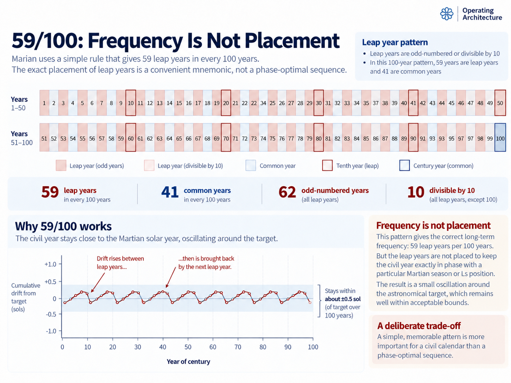

INTERCALATION
14) Odd Years Leap
The 59/100 Rule
Mars refuses to fit neatly into whole sols. That is the entire reason leap years exist.
The Marian civil year must contain an integer number of physical Martian days. A common year contains 668 sols and a leap year 669, yet successive passages through the selected seasonal reference, Ls = 15°, recur after approximately 668.59 sols around the intended founding era.
Neither civil year is right on its own. Use 668 every year and the calendar gradually runs early against the Martian seasonal cycle; use 669 every year and it runs late. The solution is intercalation: alternate between the two in the right proportion.
That creates two different design problems. Leap frequency asks how many years should receive an additional sol over a long interval. Leap placement asks which particular years should receive them. The first is primarily an astronomical problem; the second is partly a civil one.
The mathematics of the frequency is straightforward. The design question is how complicated the placement rule should become in pursuit of a slightly closer fit.
Marian's answer is deliberately plain:
Odd-numbered years are leap years.
Years divisible by 10 are also leap years.
Years divisible by 100 are common years.
The century exception takes precedence.
That produces 59 leap years in every 100 regular Marian years, giving a mean civil year of exactly:
668.590000 sols
The frequency of leap years is chosen to fit the astronomy. Their placement is chosen partly for human beings.
That distinction is the point.
Why 59 leap years?
The 668-sol common year already follows from Marian's internal structure. Each common-year quarter contains:
56 + 56 + 55 = 167 sols
and four such quarters give:
4 × 167 = 668 sols
That produces the twelve-month structure and the repeating 56–56–55 rhythm.
Mars, however, does not return to Ls = 15° after exactly 668 sols. The technical analysis places the relevant recurrence around the anticipated settlement era very close to 668.590 sols. The precise estimate varies slightly with the modelling interval and assumptions, but not enough to affect the civil conclusion.
A 668-sol common year is therefore short by roughly:
668.59 − 668 = 0.59 sol
while a 669-sol leap year is long by roughly:
669 − 668.59 = 0.41 sol
The calendar consequently needs a leap sol in a little under three years out of every five. Once the common year has been fixed at 668 sols, the required leap fraction is almost visible in the decimal:
668.59 = 668 + 0.59
So approximately 59 per cent of regular Marian years need the additional sol. A century-scale fraction follows naturally:
59 / 100
giving:

Detailed figure description
The upper chart displays the Marian leap classification across a hundred numbered years, visually distinguishing ordinary leap years, decennial leap years and the century exception. A summary row gives 59 leap years and 41 common years in a century. The lower graph traces fluctuations in cumulative difference from an idealized annual average, illustrating that the chosen rule is memorable but not phase-optimally distributed. Values in the graph are mathematical idealizations, not measured Mars ephemeris errors.
Editorial note: this is a descriptive summary, not an independently verified transcription of every diagram label. Refer to the surrounding text and the Marian technical specification for authoritative numeric details where applicable.
668 + 59 / 100 = 668.590000 sols
That is extremely close to the selected astronomical recurrence around the intended founding era.
The frequency question is therefore largely settled: approximately 59 leap years are required in every hundred.
The interesting question is where to put them.
Counting to 59 without a table
Marian reaches the required count with three simple tests.
First, odd-numbered years leap. Between MY1 and MY100 there are fifty odd-numbered years, so we begin with 50 leap years.
Second, years divisible by 10 also leap. That adds MY10, MY20, MY30, MY40, MY50, MY60, MY70, MY80, MY90 and MY100:
50 + 10 = 60
Third, years divisible by 100 are common. MY100 therefore does not leap:
50 + 10 − 1 = 59
That is the entire century rule. No leap-year table has to be memorised, no astronomical calculation is required and no cumulative sequence needs to be looked up. Leap status follows directly from the year number.
| Marian year | Type | Reason |
|---|---|---|
| MY1 | Leap | Odd |
| MY2 | Common | Even, not divisible by 10 |
| MY10 | Leap | Divisible by 10 |
| MY41 | Leap | Odd |
| MY42 | Common | Even, not divisible by 10 |
| MY50 | Leap | Divisible by 10 |
| MY51 | Leap | Odd |
| MY99 | Leap | Odd |
| MY100 | Common | Century exception |
| MY101 | Leap | Odd |
The adjacent leap years around a decennial boundary are intentional. MY50 leaps because it is divisible by ten; MY51 leaps because it is odd. The sequence is not a perfect alternation between 668 and 669 sols, nor is it supposed to be.
The objective is 59 leap sols per century with a rule that can be reconstructed from a sentence.
Frequency and placement are different problems
Intercalation therefore contains two separate questions:
How many leap sols should occur over a long interval?
and:
Where within that interval should they occur?
These are easy to blur together because one leap-year rule eventually answers both. They are nevertheless different design problems.
The 59/100 fraction answers the frequency question. Across 100 regular years, Marian contains:
41 × 668 + 59 × 669 = 66,859 sols
which gives:
66,859 / 100 = 668.590000 sols per year
But that arithmetic does not tell us which 59 years should be leap years. Many different placements could produce exactly the same century average.
The leap years could be spread almost perfectly evenly, placed according to a mathematical sequence, clustered badly, or positioned specifically to keep each successive civil New Year as close as possible to the smooth astronomical target.
Marian deliberately separates the two decisions. Leap frequency is selected to fit the long-run astronomical recurrence. Leap placement is selected to make the resulting civil rule intelligible, deterministic and memorable.
The 59/100 fraction therefore belongs to the first problem. The odd / decennial / century rule belongs to the second.
That choice has a measurable cost.
The calendar moves around the astronomical target
Imagine an idealised annual recurrence of exactly 668.59 sols. Civil years cannot end after 0.59 of a sol, so Marian alternates between whole-sol years on either side of that target.
After a 668-sol common year, the civil sequence has used about 0.59 sol less than the smooth astronomical interval. A 669-sol leap year then moves the boundary back in the other direction.
The result is a small back-and-forth movement around the astronomical reference rather than perfect coincidence with it every year.
That movement is phase displacement.
Whole-sol calendars naturally produce it. The relevant questions are whether the displacement remains bounded and whether the long-run average continues to track the physical cycle.
For Marian, it does.
The technical analysis shows that the mnemonic rule allows somewhat larger intermediate excursions from the smooth astronomical target than a deliberately phase-balanced distribution would. But those excursions do not accumulate indefinitely: the 100-year cycle returns very close to the target because the average year length is right.
That distinction matters.
A temporary phase difference is not the same thing as long-term drift.
Could the leap years be placed better?
Yes.
If the same 59 leap sols were distributed specifically to keep cumulative civil time as close as possible to a smooth rate of 0.59 leap sol per year, the calendar could remain nearer to the astronomical reference throughout the century.
On that narrow metric, a phase-balanced sequence is better.
Marian still does not use one.
That is not because the difference is being denied. It is because civil calendar design has another objective: a rule should be teachable, auditable and recoverable without requiring a generated sequence or lookup table.
The Marian rule can be spoken aloud:
Odd years leap. Tens leap. Hundreds do not.
Someone encountering a Marian date generations later can reconstruct the leap status from the year number alone.
The trade-off is therefore straightforward:
phase-balanced placement = better short-period astronomical tracking
Marian placement = better mnemonic transparency
Marian chooses the second.
The detailed phase analysis belongs in the technical record because it establishes what that choice costs. The civil calendar needs the conclusion rather than every intermediate statistic: 59/100 gets the long-run frequency right, while the mnemonic placement sacrifices some short-period astronomical neatness in exchange for a rule people can reconstruct.
Simple does not mean careless
A still simpler frequency could certainly be chosen. Three leap years in every five would give:
3 / 5 = 0.6
and therefore an average year of:
668.600000 sols
That is easier.
It is also noticeably worse.
At the other extreme, more elaborate rational approximations can fit the astronomical estimate extraordinarily closely. But a civil rule is not improved automatically by adding digits to the denominator.
Any leap regime must be taught, implemented, audited and preserved by institutions whose users had nothing to do with its original design. A tiny numerical improvement can therefore be a poor exchange for a rule that becomes difficult to reconstruct without documentation.
The 59/100 scheme occupies a useful middle ground. Its denominator is familiar, its average is extremely close to the target and its verbal rule is short.
Marian still has only two ordinary year forms:
668-sol common year
and:
669-sol leap year
Nothing else needs to change.
What the leap sol actually changes
A leap sol appears in exactly one civil position:
Month 12 · Week 8 · Day 7
In a common year, Month 12 ends after Day 6 of its final civil week. In a leap year, the seventh position exists as the final Sunsol, changing the annual length from 668 sols to 669.
Everything earlier in the year remains identical. Months 1 through 11 do not move. The first 55 sols of Month 12 do not move. No separate intercalary period is inserted between months or outside the ordinary calendar.
The single additional sol means that:
- the final week contains seven weekday positions rather than six;
- the final minth contains 28 sols rather than 27;
- Month 12 contains 56 rather than 55;
- Sixth 6 contains 112 rather than 111;
- Quarter 4 contains 168 rather than 167.
The entire leap-year difference is concentrated in one possible civil date. A leap year does not require the preceding calendar to be rebuilt, and the first eleven months are identical in both annual forms.
The difference arrives at the final position and nowhere else.
Leap years are calculated, not observed
Once MY1 has been instantiated, users do not need to observe Mars reaching Ls = 15° every year to determine whether the civil year will contain 668 or 669 sols.
Leap status follows from the year number.
Software does not ask, “Has Mars crossed the seasonal reference slightly early this year?” It asks whether the year is odd, whether it is divisible by 10 and whether the century exception applies.
That allows future dates to be calculated deterministically. Long-term contracts can name dates in future Marian years. Software can compute year starts. Archives can reconstruct past dates. An implementation does not need an ephemeris simply to work out whether MY86 contains the final Sunsol.
This is the division of labour established earlier:
astronomy defines what the calendar is trying to track; intercalation provides the deterministic civil approximation.
Scientific systems remain free to calculate the actual Ls = 15° crossing to whatever precision they require.
A New Year celebration does not need JPL Horizons open in another tab.
Accuracy means tracking, not coincidence
A whole-sol civil calendar cannot make every New Year coincide exactly with a recurrence of 668.59 sols. That is not a defect in Marian. It is what integer-sol intercalation means.
The common year contracts to 668 sols and the leap year expands to 669. Over time, the two forms keep the mean close to the astronomical cycle.
The relationship is therefore not:
civil year = astronomical year
but:
the civil sequence tracks the astronomical year through bounded whole-sol adjustments
That avoids a misleading expectation that every civil New Year should fall at the exact astronomical crossing. It cannot, nor does ordinary civil life require it to.
The calendar remains internally exact. A contract dated Month 8, Week 3, Day 5 does not become uncertain because the smooth astronomical reference currently lies some fraction of a sol away.
The phase relationship matters because it tells us whether the civil calendar continues to track its intended physical reference. It does not mean the calendar has “lost” a sol.
The sky does not know what date it is.
The calendar knows what physical cycle it is approximating.
Why not correct the calendar whenever necessary?
One could build a responsive system instead: calculate the actual Ls = 15° crossing each year, monitor the difference from the civil calendar and add or suppress a leap sol whenever some threshold is reached.
Astronomically, that could be extremely accurate.
Civically, it would be troublesome.
Future calendar structure would no longer follow entirely from the year number. Long-term planning could depend on future astronomical calculations, published tables or decisions by an authority. That conflicts with one of Marian's core requirements: ordinary dates should remain deterministic.
The adjustment regime is therefore designed in advance. People should be able to determine the shape of MY86 without waiting for somebody to publish an ephemeris for it.
Astronomy is not being ignored. The civil approximation has simply been separated from annual observation.
A century is not eternity
The 59/100 rule is not claimed to be permanently exact.
Mars's orbital and seasonal geometry changes slowly over long timescales, and a rational approximation that performs extremely well around the intended founding era will not remain mathematically perfect for geological time.
Trying to solve that now with an elaborate multi-millennial leap rule would be false precision.
Marian therefore treats 59/100 as the initial ordinary intercalation regime. If, centuries later, accumulated phase or improved long-range modelling showed that a rare additional correction was useful, a future standards authority could introduce one without redesigning the everyday calendar.
A sol would still be a sol. Months could remain 55 or 56 sols. Minths, Sixths and quarters could retain their meanings. Ordinary common and leap years could remain 668 and 669 sols.
Long-range steering can be separated from ordinary civil machinery. That is healthier than forcing every user to learn a maintenance rule for a problem their descendants may not encounter for centuries.
The rule people actually need
For ordinary use, almost all of the preceding analysis can be forgotten. A user needs three tests:
Odd year? Leap.
Otherwise divisible by 10? Leap.
Divisible by 100? Common instead.
That is enough.
MY41 — leap
MY42 — common
MY43 — leap
MY50 — leap
MY51 — leap
MY52 — common
MY90 — leap
MY99 — leap
MY100 — common
MY101 — leap
Across every hundred regular years, those tests produce exactly 59 leap sols. Those 59 decisions move the mean civil year from 668 sols to almost exactly the selected Martian tropical recurrence, while the rest of the architecture remains stable.
Every regular year still has twelve months and twenty-four minths. The same Sixths, quarters and weekday structure remain in place. Only the final Sunsol of Month 12 distinguishes the two annual templates.
That is where intercalation belongs in an operating calendar: precise enough to preserve the astronomical relationship, but contained enough that its complexity does not spread through the whole system.
The astronomy is not simple. The civil response can be.
What the rule claims
The 59/100 rule supports three fairly modest claims.
First, 668.590000 sols is extremely close to the selected Ls = 15° recurrence around the intended founding era.
Second, the mnemonic placement keeps the civil sequence tracking that astronomical reference over time, although a deliberately phase-balanced placement could reduce the intermediate phase variation.
Third, the leap status of an ordinary Marian year can be determined from a short verbal rule without astronomical computation or a lookup table.
It does not claim mathematical optimality. It does not claim that no long-period correction could ever become useful, and it does not turn Marian dates into astronomical coordinates.
When exact seasonal position matters, use Ls. For civil chronology, use the calendar.
The astronomy determines the leap frequency. Human usability helps determine the leap placement.